AL-Gen+
Public IDS datasets such as CICIDS, NSL-KDD and UNSW-NB15 are stale, narrow and incompatible with each other. AL-Gen+ produces fresh labelled traffic, synthetic or real, in one schema, and trains models on it in the same tool. It is the basis of two research papers.
mode 1 · synthetic
Gaussian, uniform, exponential, Poisson, Zipf and mixture distributions, with configurable intensity and attack ratio, reproducible seeds and blended multi-vector campaigns. 100,000+ records a minute, no network needed.
mode 2 · real attack
Real attacks against a localhost server or an isolated VirtualBox VM (Ubuntu + Apache2), labelled through Normal → Transition → Full Attack phases. Frame sizes are calibrated from Wireshark captures.
network SYN flood · UDP flood · Nmap SYN · Nmap NULL · Hulk · Slowloris
web SQL injection · blind SQLi · command injection · XSS (DOM, reflected, stored)
payloads275,280+
datasets14 public sets unified into binary, multi-class and fine-grained labels
schema 22 columns, identical in both modes
Try it: attack one machine from another
Two virtual machines, like the VirtualBox lab. Type a command into the attacker's terminal, or tap an attack, and watch the target take it: its CPU and connections climb, its log fills up, and sampled packets become labelled rows. It is a simulation, so there is nothing to download; the real project makes the data.
Python · Scikit-Learn · Pandas · NumPy · PyQt5 · Wireshark · VirtualBox · DVWA. Every attack runs against machines in an isolated lab.